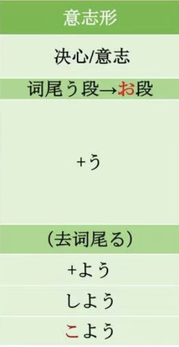

第30课 意志形 春のピクニック はる
う段变お段

1.もう11時から寝よう。 —意志
2.今日、会社を休もうと思います。 —意志
3.明日、病院へいこうと思います。 —意志
4.荷物が重いので、宅配便で送ります。 —原因
ので：口语/书面语，郑重礼貌；强调客观因果关心。
から：口语；主观性强。
時間がないから、急げ。
道が混むだろうから、早く出かけよう。
時間がないので、急いでください。
道が混むので、電車を利用します。
電車が遅れたので、遅刻しました。
のだ—>ので・んで—>形式名词
Aい＋ので
AN＋な＋ので
N＋な＋ので
简体/敬体+ので/から
考え かんが
告白 こくはく
遅い おそい
遅れ おくれれ
道 みち
混む こむ
利用 りよう
重い おもい
発 ぱつ
A：仕事が終わってから、飲みに行こうよ。
B：ごめん。明日早いから、今日はちょっと。
A：もう遅いので、そろそろ帰ろうと思います。
B：お疲れ様でした。気をつけて。
马上
A：もうすぐゴールデンウイークですね。何か予定がありますか。
B：長江下り（ちょうこうくだ）をしようと思っています。
A：土曜日も仕事ですか。
B：ええ。香港がらお客さんが来るので、空港へ迎（むか）えに行きます。
陳さんと王さんは留学生です。二年間日本に住んで、日本語を勉強しました。もう直ぐ中国へ帰ります。陳さんは料理を作るのが好きなので、日本料理のいろいろな店でアルバイトをしました。美味しい天ぷらや親子丼を作ることができます。だから、中国へ帰って、二人で日本料理の小さな店を開(ひら)こうと言っています。それで、中国人に日本料理を食べてもらおうと思っています。これは二人の夢です。
李：今度の週末、みんなでピクニックに行こうと思っているんですが……
森：いいですね。どこへ行くんですか。
李：香山（こうざん）へ行こうと思います。
加藤：森君、遅いよ。
森：すみません。出かけようとした時に、電話があったんです。
加藤：そうか。それじゃ、まあ、仕方（しかた）ないな。馬さん、みんなそろったから、そろそろ出発（しゅっぱつ）しようか。
馬：ええ、そうしましょう。
李：近くに北京植物園（しょくぶつえん）があるので、帰りに寄（よ）ろうと思うんです。
戴：いいですね。私は花が好きなので、楽しみです。
森：人が多いですね。
陳：今はちょうどピクニックのシーズンですから。
馬：この季節は、どの行楽地（こうらくち）も人でいっぱいですよ。
李：秋の香山もいいですよ。今度は紅葉を見に来ようと思っています